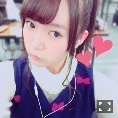
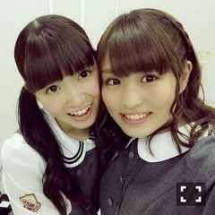

| 2016/01 24 Sun | ひめたん-0o0-その507 |

みなみちゃんと
ごはん行ってきたよー♡
前から行こう行こうとは言っていたけれど
とうとう叶っちゃったよ(´｡•ω•｡`)
3時間半たっぷりお話しました！
楽しかったー！
それから、寧々ちゃんと久々に会ったの！
万理華ちゃんと3人で
まったりお話してきたよ( ˆωˆ )
私こんなことがありました～みたいな話を
お互いにしてたんだけどさ
いやあ、1年間って本当大きいよね。
会う度に嬉しい報告できるような
関係でいられたら素敵だよね
よーし、頑張ろっと！
あと何だろう、あれかな、
おととい思い出したように
音楽プレーヤーの電源入れたけど
まー、つかなかったよね。
電源落ちた直後に一番やってはいけない
スイッチオン・温風を当てる・
本体を振って水分を出そうとするの三拍子
全制覇したもん......
だって焦ってたんだもん。
速やかに乾燥剤と一緒に密封して
数日寝かせるのがベターらしいですよ
皆さん気をつけてください( ´ ･ω･ ` )おん

さて、日曜の夜はらじらー！サンデー
次回は声優アーツにSCREEN modeから
林勇さん、太田雅友さん。
乃木坂から生田絵梨花ちゃんが登場！
え！いくちゃん来るって！
いくちゃん来るってよみんな！
いくちゃんが来るよー！え、藤森さーん！
いくちゃんへの応援メッセージも
お待ちしてます( ˇωˇ )
おたよりの宛先はこちら。
そういや昨日のサタデーに
花岡なっちゃん来てくれたんだね！
また会えたらいいな～♪
ソニレコ最新回配信されました！
前回に引き続きゲストに
黒猫チェルシーの皆さんをお迎えしてます
オーディションをしたんだけれど
やー、とりあえずごめんなさい。笑
懐かしいと言ってくださる方は
どのくらいいらっしゃるかな。ふふ。
メールも待ってます(^o^)
チャンネル登録よろしくね！

これか！こーゆー顔か！
みんなに真似される、
よく指摘されるのはこの顔か！
このあとは乃木坂工事中ですね～
前回に引き続き身内モノマネ大会です
お楽しみに！

ここで唐突に可愛い花奈ちゃん貼る。
ぺろぺろ～
(＊´・ω・＊)
コメント(700)
2016/01/24 23:42